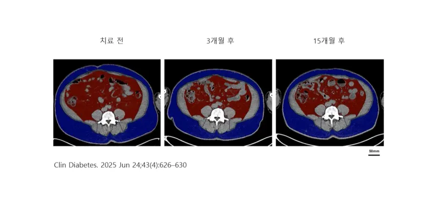
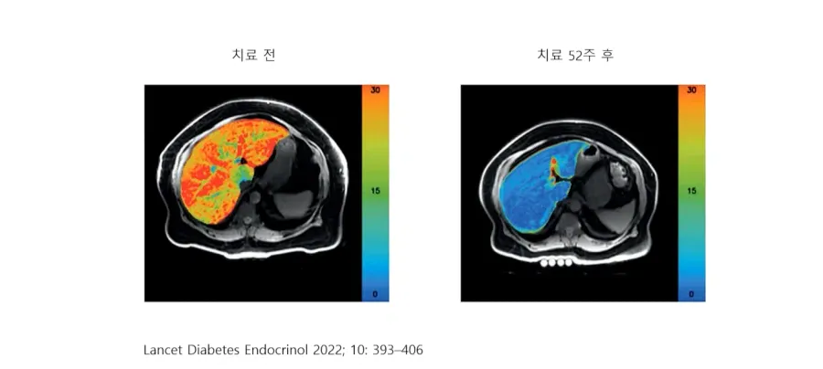
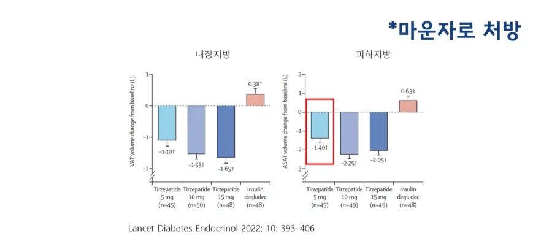

우선 본 실험은 마운자로로 지방이 유의미하게 빠지는지를 추적관찰하는 실험으로
먼저 해당 사진은 복부 MRI 단층사진이다.
파란색은 피하지방
붉은색은 내장지방인데
피하지방은 대략 20%정도 감소
내장지방은 50%이상 감소한것이 확인되었다.

그리고 가장 중요한 간에 낀 지방을 체크한 것인데
파랑색 - 지방없는 부위
녹~주황~붉은색으로 올라갈수록 지방이 심하게 껴있다는 얘기다.
52주 이후 지방간은 완전히 없어졌다고 해도 좋을정도로 호전이 되었다.

그리고 마지막으로 296명을 대상으로 MRI 단층촬영을 통한 분석을 한 결과
마운자로 / 5mg /10mg /15mg / 인슐린
피하지방 / -1.4L / -2.25L / -2.05L / +0.63
내장지방 / -1.1L / -1.53L / -1.65L / +0.38
가 감소된 것으로 확인 되었다.
내장지방부터 빠지고 지방간은 완전히 치료 ㄷㄷ
거의 이정도면 뭐 무안단물인가?
나는 맞고 싶은데 저거 맞으면 술 못마신다 그래서 미루는 중 ㅜㅜ